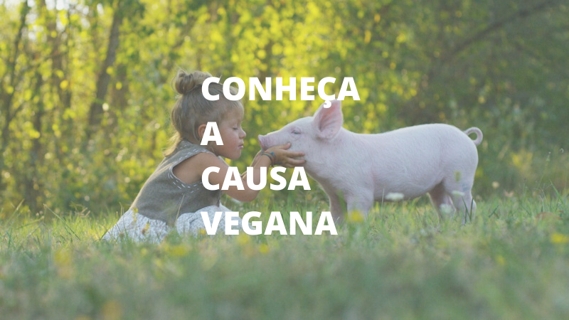

⚌
HOME
NOTÍCIAS
ARTIGOS

Por Julia Soares 19/5/2022
Maquiagens veganas
Por Alex Miguel 19/5/2022
Veganismo: 4 dicas para começar
Por Thomas 19/5/2022
Sensacionalismo confunde e reforça preconceito com veganismo